Néo discute, crée des images 4K, retouche tes photos, monte des vidéos, rédige tes documents Office, modélise en 3D et parle français. Tout tourne sur ta carte graphique : sans abonnement, sans compte, sans cloud.
portrait d'une jeune femme aux taches de rousseur et aux cheveux cuivrés, lumière douce d'une fenêtre, rendu argentique
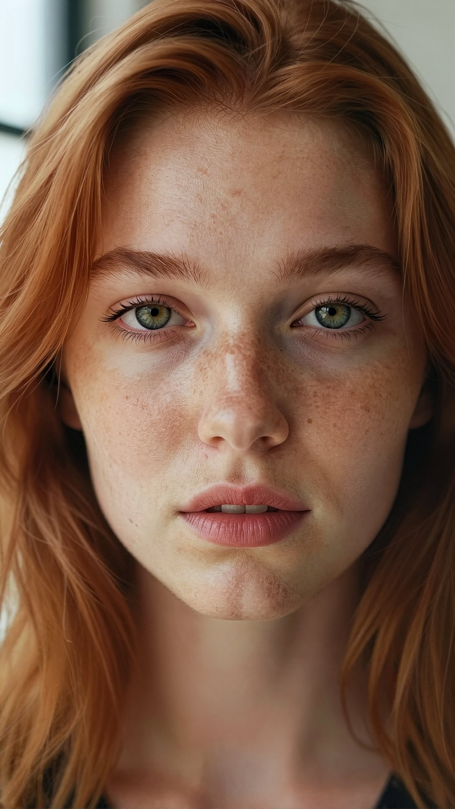
✓ 2160×3840 · vérifiée par la vision, note 9/10 · 75 sChaque portrait a été demandé à Néo en une phrase, en français, puis peint et vérifié sur une seule carte graphique grand public. Aucune image n'a quitté la machine.
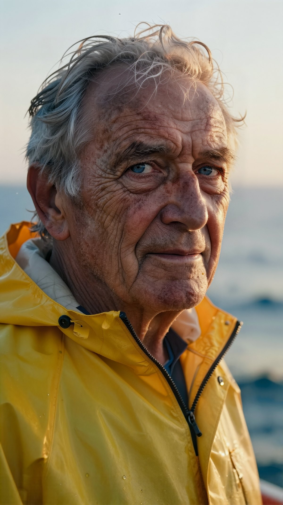
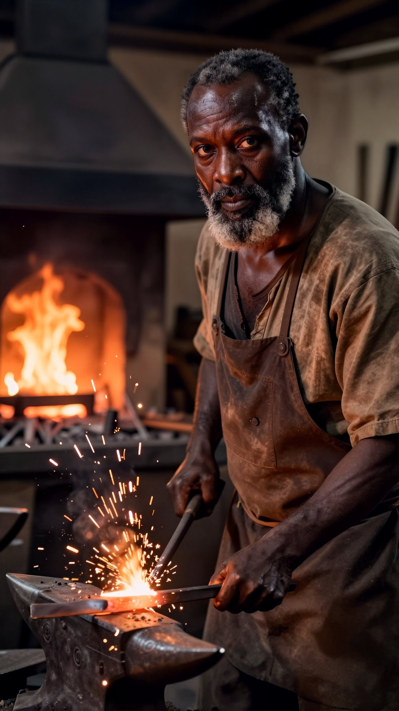
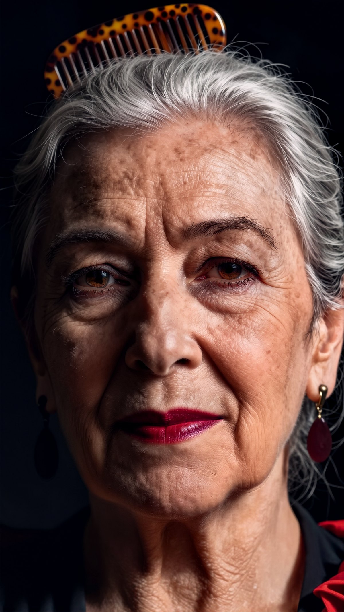
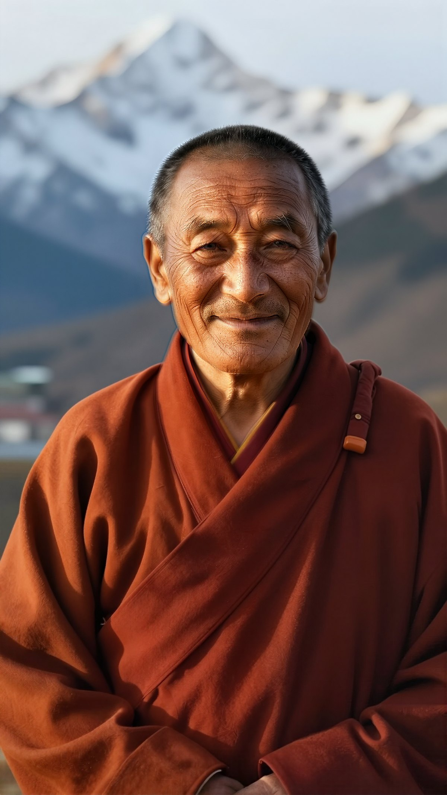
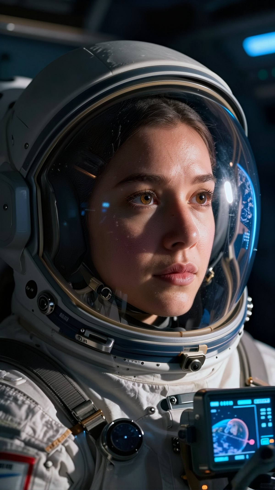
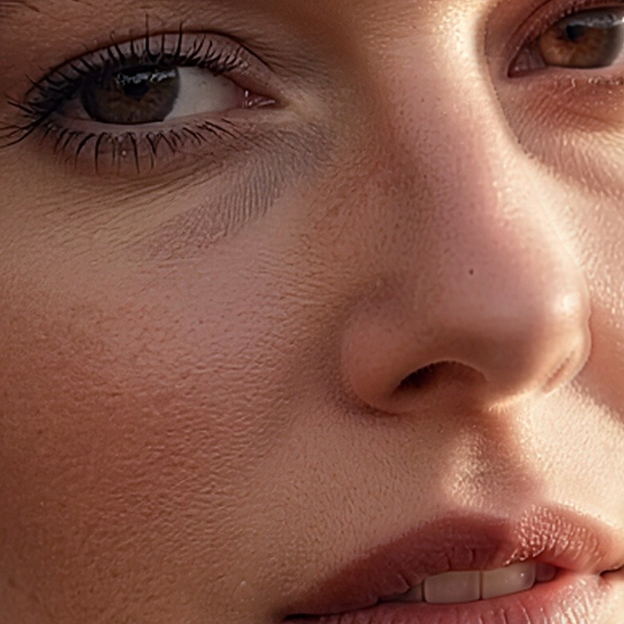
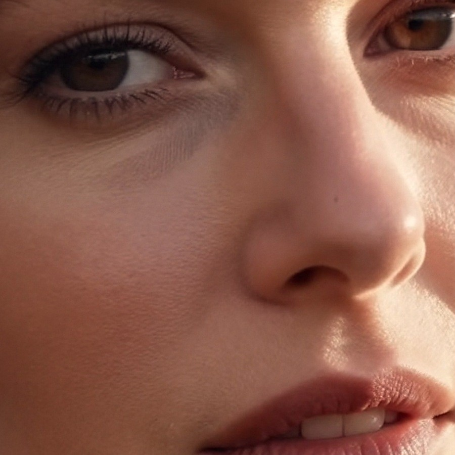
AvantNéo V2Les générateurs d'images lissent la peau et noient les yeux. Néo repère chaque visage et le retravaille.
ComprendreLe modèle de conversation transforme ta phrase en brief d'artiste : cadrage, lumière, matières.
PeindreZ-Image-Turbo peint en 3840×2160, puis une passe « visage » ajoute le grain de peau sans changer la personne.
Affiner les yeuxUne passe dédiée redonne un iris structuré et une pupille nette, en 11 secondes environ.
VérifierLa vision de Néo relit l'image et contrôle que tout ce que tu as demandé y figure.
Conversations, documents, photos et mémoire sont stockés sur ton disque. Rien n'est envoyé à une entreprise, rien ne sert à entraîner le modèle de quelqu'un d'autre.
Code sous licence MIT, modèles open source, aucun abonnement, aucune limite de messages. Ta carte graphique fait le travail.
Personnalité, dictée, voix et documents en français. Les montants s'écrivent « 1 234,50 € » et les formules Excel calculent la TVA.
Conversation, studio photo, montage vidéo, bureautique, 3D, recherche web et voix. Plus besoin de jongler entre six services.
Néo choisit lui-même parmi 62 outils : il crée le fichier Excel, prépare l'impression 3D, ouvre une application, cherche une source et te la cite.
Tes notes et sa propre auto-évaluation alimentent un coach hebdomadaire. Tu peux même entraîner ton propre modèle, testé avant d'être adopté.
Durée en secondes sur la machine de référence. Plus le point vert est à gauche, mieux c'est.
Banc de 27 questions noté sur 100 par un juge automatique, avant et après la refonte de novembre.
| Domaine | V1 (octobre) | V2 (novembre) |
|---|---|---|
| Cerveau | Qwen3 8B + un second modèle pour la vision | Gemma 4 12B, qui voit et raisonne dans un seul modèle |
| Images 4K | FLUX schnell / Kontext + agrandissement | Z-Image-Turbo en 3840×2160, brief d'artiste, passes visage et yeux, vérification par la vision |
| Retouche | FLUX Kontext, 140 à 218 s, scène recréée | FLUX.2-klein en 8 à 16 s, visage et cadrage conservés, 22 filtres en direct |
| Vidéo | absente | Storyboard → Wan 2.2 → montage : un vrai mouvement, pas un simple zoom |
| Documents | Word, PDF, Excel | + PowerPoint, formules Excel vérifiées, montants à la française |
| Connaissances | absentes | Fiches (résumé, points clés, sources) que Néo réutilise |
| 3D | TripoSR, d'après une photo | Pièces paramétriques en 3 s et Hunyuan3D d'après une simple phrase |
| Voix | Whisper + voix Windows | Parakeet pour la dictée et Piper, une voix neuronale française |
| Interface | un thème Matrix | 5 thèmes, 97,5 % des couleurs pilotées par le thème |
| Fiabilité | 4 tests automatisés | 340 tests, intégration continue sur GitHub |
La V1 refaisait toute la scène pour changer un détail. La V2 ne touche qu'à ce que tu demandes, en quelques secondes.
consigne : remplace le fond par un paysage de montagnes enneigées en plein jour, garde le guerrier tel quel
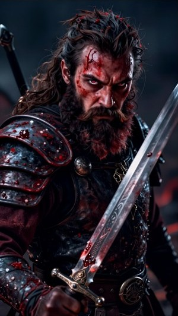
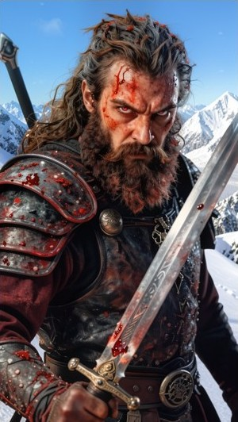
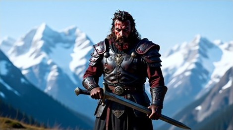
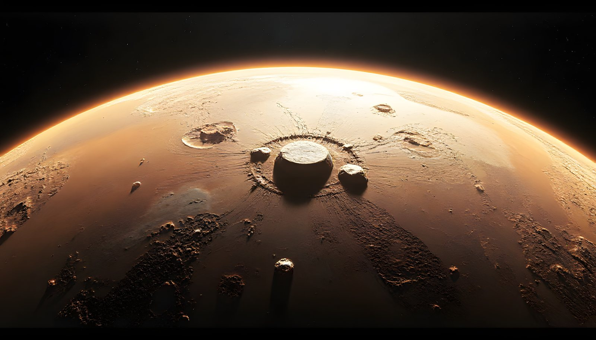
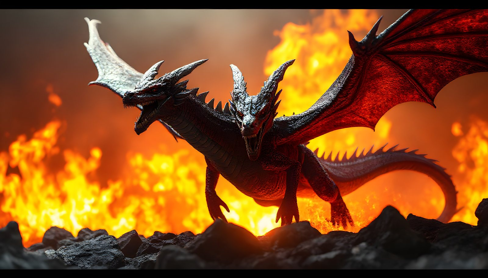
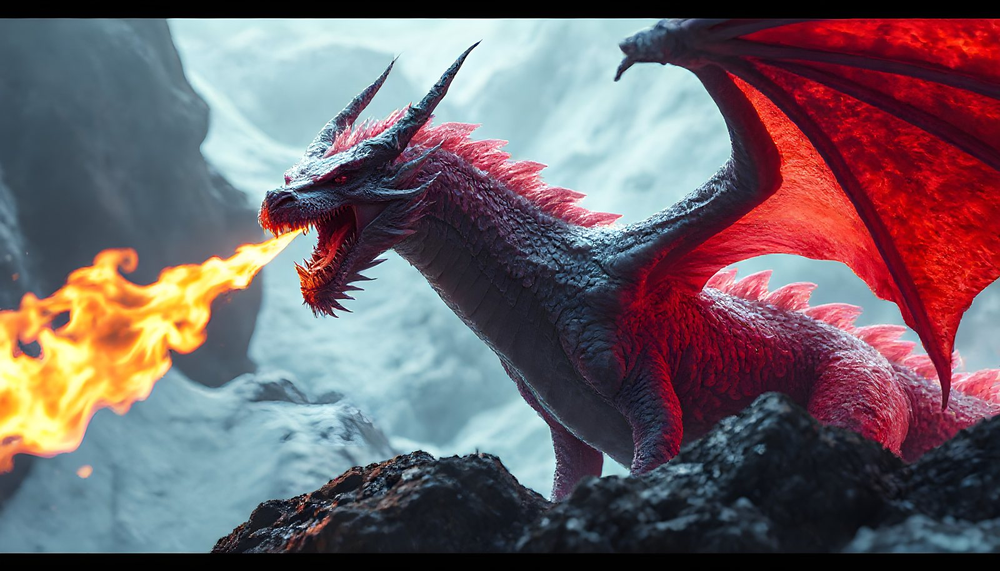
Décris une pièce ou une sculpture : Néo la modélise, vérifie qu'elle est imprimable et la prépare pour ton imprimante. Fais tourner le modèle avec la souris ou le doigt.
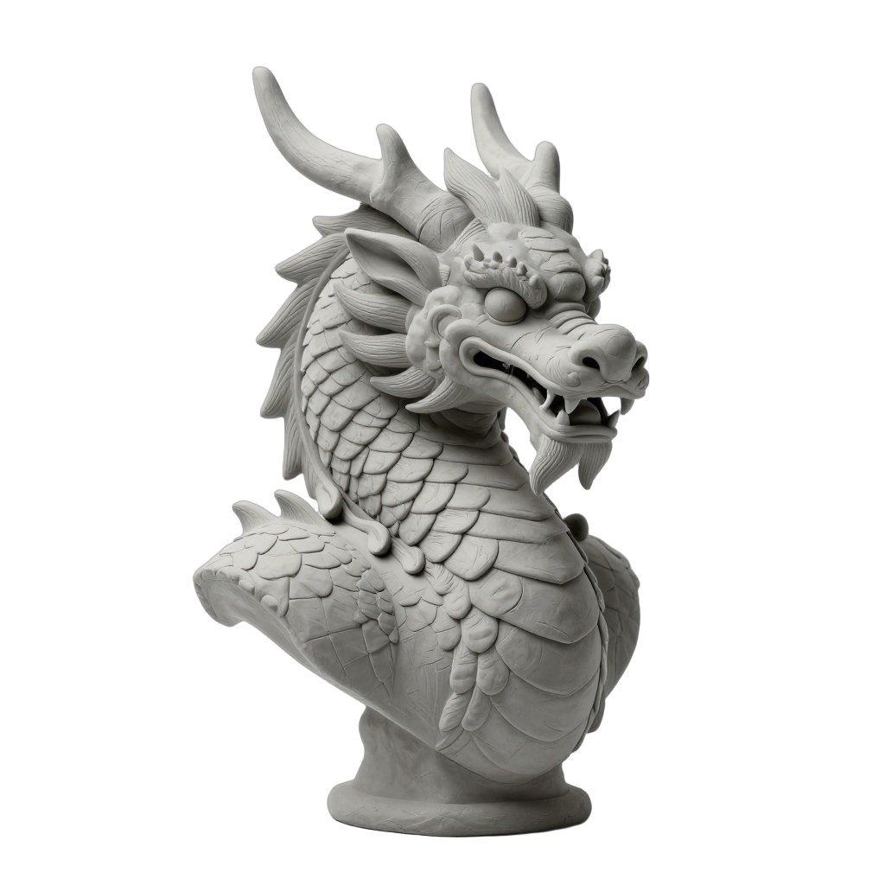
demande : buste de dragon majestueux, écailles détaillées, cornes recourbées, 90 mm
Néo dessine d'abord l'image de référence, puis en tire un volume fermé, prêt à trancher.
demande : un support de téléphone
Néo reconnaît un objet courant et prend son gabarit : cotes exactes, géométrie vérifiée, verdict « imprimable » et fichier 3MF prêt pour le trancheur.
Un personnage chaleureux qui réfléchit avant de répondre, voit tes images et se souvient du contexte.
4K photoréaliste, retouche par consigne, 22 filtres avec aperçu immédiat.
Du storyboard au clip monté : image de chaque plan, mouvement Wan 2.2, montage ffmpeg.
Word, PDF, Excel et PowerPoint mis en page, avec des formules qui calculent juste.
Pose une question à tes PDF : la réponse cite ses sources. Recherche web en plusieurs étapes.
Pièces paramétriques, formes organiques, rendus Blender et G-code prêt à imprimer.
Mot d'éveil, dictée en français et voix neuronale, aussi depuis un autre appareil du réseau.
API compatible OpenAI sur /v1, serveur MCP, métriques et traces.
Un serveur Rust ultra-léger orchestre les modèles et les outils. Internet n'intervient que si tu le demandes.
Quelques outils interrogent un service public quand tu leur demandes :
Tes conversations et tes fichiers, eux, ne sortent jamais.
Un assistant d'installation détecte ta carte graphique et propose les modèles adaptés. Cinq thèmes, du terminal Matrix au pastel.
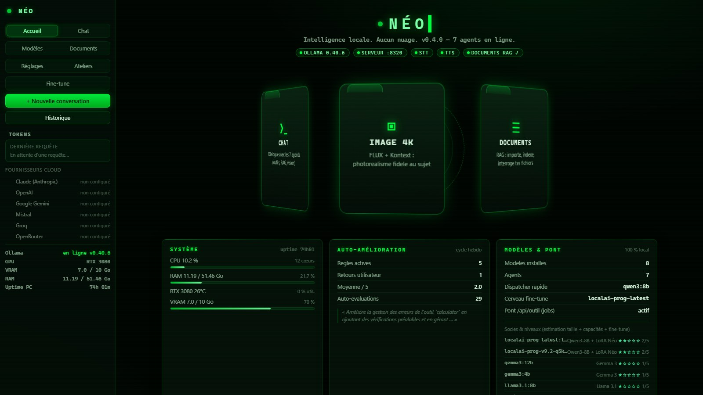
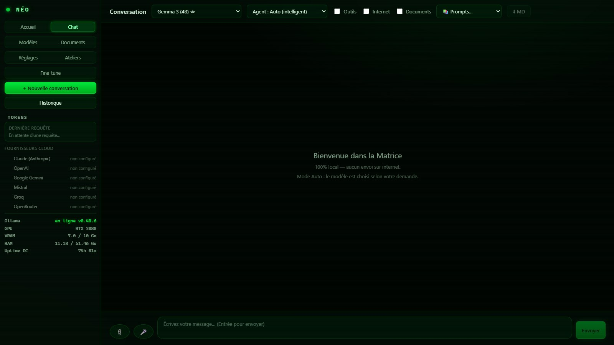
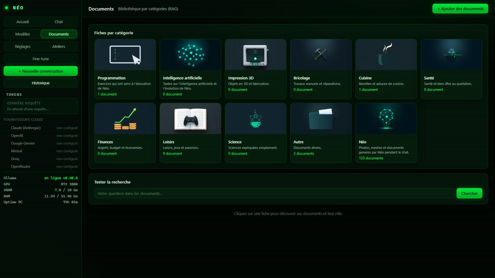
Un installateur qui s'adapte à ta machine : il détecte ta carte, active seulement ce qu'elle sait faire, et propose un mode sans carte graphique.
# 1. Récupérer Néo git clone https://github.com/tony2marseille-droid/Neo-v2 # 2. Suivre le guide pas à pas docs/DEPLOIEMENT.md # 3. Ouvrir Néo http://127.0.0.1:8320
Mets une étoile pour suivre le projet, essaie-le sur ta machine, propose une amélioration. Chaque retour fait avancer Néo.